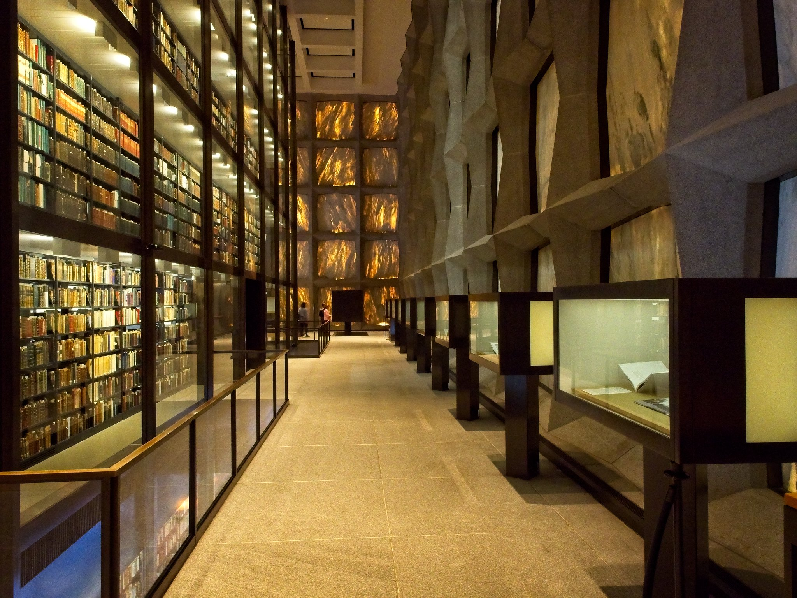
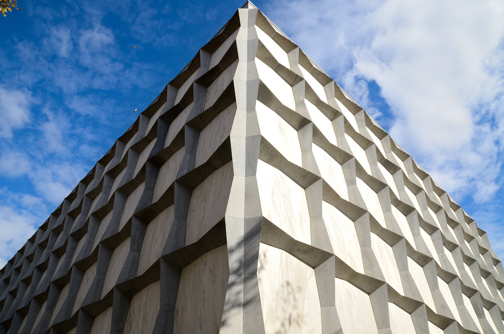

Blog
The Beinecke Rare Book & Manuscript Library
May 24, 2019
by Benjamin Boczulak

Photo by: Patrick Franzis - CC BY-NC-ND 2.0
The Beinecke Rare Book & Manuscript Library was designed by Gordon Bunshaft under the firm Skidmore, Owings & Merrill. This building was designed to house the rare books and manuscripts belonging to the university library.
Photo by: Patrick Franzis - CC BY-NC-ND 2.0
The exterior of the building is a steel and concrete grid which form a frame for 1.25-inch translucent marble panels. These translucent marble panels, in my opinion, give the building life and help create illusion to the outside would while visitors are inside this book “vault."
The interior contains a five-story tall glass case of rare books that seems to be elevated and apart from the surface where visitors would normally walk. This underscores the unique and special nature of the books stored in this glass chamber. The interior is lit from indirect daylight from the entrance below and lights positioned in the ceiling. The translucent marble is visible from the interior and on a sunny day, the veins and flaws in the marble are highlighted and made visible in the interior space. This connects visitors to the outside world but still emphasizes that they are inside. This translucency gives visitors a sense of time and weather despite there being no windows on the main floor.
As you may be able to tell, I am a big fan of Bunshaft’s use of translucent materials in the construction of this building, and I believe that more architects should consider incorporating translucency into their buildings. It gives life to what would ordinarily be a plain wall and creates another dimension to 3D space which is not normally explored.
Many architects today are using polycarbonates to create walls and surfaces that diffuse light and block sight, which helps to create a more visually appealing and natural structure that responds to the surrounding environment.
Location from Google Maps: